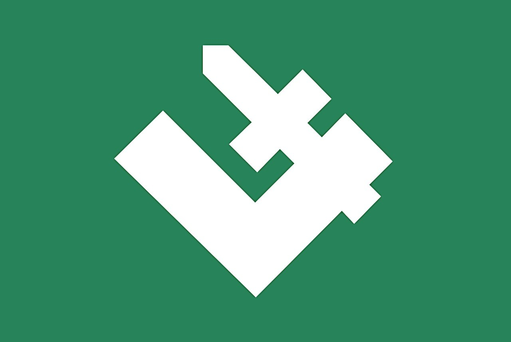
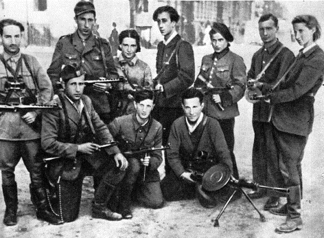
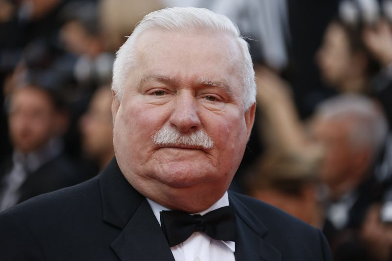

Pais localizado na Europa, com pouco mais de 38 MI de habitantes, a Polonia tem como uma base economica diversificada, que inclui atividades como: mineracao de gas natural, plantacao de batatas, criacao de bovinos e tambem a producao de maquinas movidas a energia eletrica. Com um IDH (indicie de desenvolvimento humano) de 0.843, esperanca de vida de 77.4 anos de vida, a Polonia ocupa o 36* lugar no ranking de melhores paises para se viver segundo uma pesquisa feita pela ONU em 2015.
Eleicao de Brest (1930)
Em 16 de novembro de 1930, foram realizadas eleicoes parlamentares, onde o BBWR (Bloco nao partidario para cooperacao com o governo, que mais tarde se tornaria um partido, que tinha como objetivo, realizar mudancas na constituicao, limitar o poder legislativo e atrair circulos conservadores) obtiveram 47% dos votos, 249 (dos 444) na Sejm (camara dos deputados) e 77 (dos 111) votos no senado.
As mesmas tiveram a manipulacao, por parte da Sanacja (movimento politico, que defendia o poder autoritario do governo) sob o controle de Józef Piłsudski (foi um revolucionário e ditador da Segunda República Polonesa, bem como o líder de suas forças armadas). As eleicoes deveriam ter sido "concretizadas" em maio, mas o governo invalidou o resultado, sendo assim, novas eleicoes foram marcadas para novembro, usando as manifestacoes que se davam contra o gorverno como pretexto para tal ato. Sendo assim 20 membros das oposições, incluindo a maioria dos líderes da Centrolew (alianca entre oPartido Polonês Socialista, Partido Popular da Polónia "Piast" e Partido Popular da Polónia "Wyzwolenie") foram presos em setembro sem mandado, apenas por ordem do ministro da segurança interna, acusando-os de tramar um golpe contra o governo. Os membros da oposição (que incluiu o ex-primeiro-ministro Wincenty Witos, e a Silésia herói nacional, Wojciech Korfanty) foram presos na Brest Fortress, onde seu julgamento teve lugar (daí o nome popular para a eleição: a 'eleição Brest').
Exercito Nacional Radical (Obóz Wielkiej Polski) (1934)

Partido criado em 14 de abril de 1934, principalmente por jovens radicais que sairam do partido nacional democradico, o mesmo pregava ideias do facismo italiano, o que fez com que muitos autores o classificasse como um movimento facista. O partido proclamava, a mudanca para um governo nacionalista (sistema economico e social, que priorisava o interesse individual do estado), apoiou a adesao de leis anti-semitas (leis que descriminaval os judeus), estado centralizado e a propriedade privada. Sem contar que apoiou a eliminassao de minorias da Plonia.
OBS: Nome em ingles National Radical Camp, devido os diversos significados de camp (acampamento, campo, etc) resolvi deixar o que mais condiz (exercito em campanha).
Invasao Alema (1939)
Madrugada de 1º de setembro de 1939, com os alemães mobilizando 1,5 milhão de soldados, apoiados por 3.600 blindados e 1.929 aviões de guerra. Eh dado o inicio a invasao a Polonia. Hitler usou como pretexto para o ataque um falso ataque polones a uma radio alema que se localizava na fronteira dos dois paises, mas tudo mal passava de um teatro encenado pelos soldados de Hitler. Assim usando uma estrategia ate entao inovadora, batizada de "guerra-relampago", Hitler dominou a Polonia em questao de semanas, sem contar que a Uniao Sovietica tambem resolveu atacar a Polonia, fazendo com que o territorio polones seja dividido entre ambos.
Devido acordos feitos com a Inglaterra e Franca, de que ambos protegeriam a Polonia de Hitler, caso a mesma fosse atacada, no dia 3 de setembro de 1939, a Franca e a Inglaterra se viram obrigadas a declarar guerra contra a Alemanha.
Deu-se, paralelamente, um planejado massacre da elite polonesa, executado pela Einsatztruppe (tropa de extermínio), que visou exterminar políticos, intelectuais, acadêmicos, professores, padres, oficiais superiores, líderes sindicais, etc, fazendo com que a Polônia, principal cenário da guerra racial nazista, fosse uma das nações que, proporcionalmente, mais perdesse habitantes civis durante a Segunda Guerra Mundial. Sem contar que o maior campo de concentracao se encotrava na mesma.
Levante do Gueto de Varsóvia (1943)
No leste europeu, muitos judeus se organizavam para uma possivel resistencia armada. Seu armamento vinha de producao caseira e tambem de contrabando externo que conseguiam levar para dentro do gueto. Quando foram vazadas as informacoes sobre assassinatos ocorridos dentro dos campos, um grupo de jovens israelitas, formaram a Z.O.B. (Organização Judaica Combatente, em polones, Zydowska Organizacja Bojowa), a mesma divulgou um manifesto que dizia aos judeus resistirem quando fossem levados aos trens (eles nao sabiam para onde eram levados), dando assim, origem a uma das mais lembradas lutas quando o assumto eh resistencia contra uma forca maior. O "Levante do Gueto de Varsóvia".

Em 19 de abril de 1943, quando as tropas e a polícia alemã entraram no gueto para levar mais judeus para os campos de extermínio, "O Levante do Gueto de Varsóvia" teve início. 750 combatentes judeus, pobremente armados e enfraquecidos por doenças e pela fome, lutaram contra um número muito maior de bem alimentados soldados alemães fortemente armados e bem treinados. Os combatentes do gueto conseguiram se defender por quase um mês mas, em 16 de maio de 1943, a revolta chegou ao fim. Dos mais de 56.000 judeus capturados, cerca de 7.000 foram assassinados a tiros e os que restaram foram levados para os campos de concentracao onde foram mortos.
Governo Pro-Comunista (1944)
Durante a conferencia de yalta, foi definido um governo pro-comunista polones, isso devido a insistencia de Josef Stalin (Secretário-geral do Partido Comunista da União Soviética), os poloneses viram isso como um tipo de traicao por parte dos aliados, alegando que os mesmos tomaram essa acao somente para o agrado de Stalin, sem contar que ignoraram totalmente o goveno polones (ainda e exilio na Inglaterra).
Movimentos Grevistas (final da dec. 1970)
Movimentos grevistas agitavam os centros do pais. Percebendo a falta de iniciativa das autoridades governamentais, um grupo de operarios e intelectuais resolveram criar o Solidarnosc, um sindicato independente, que logo "caiu no gosto" dos operarios, que rapidamente aderiram ao mesmo. Ao perceber que tal organizacao estava ganhando cada vez mais poder, o governo teve que tomar porvidencias, assim dando a origem a lei marcial, que proibia o funcionamento do Solidarnosc.
Apos a criacao da lei, os anos seguintes passaram a ser muito mais dificeis para a organizacao, tendo que funcionar ilegalmente.
Terceiro Lugar Copa do Mundo na Franca (1974)
Jogou contra o Brasil na disputa de terceiro colocado.
Anulacao da Lei Marcial e a Queda do Regime Comunista (1988)
Com determinados acontecimentos na Uniao Sovietica, o sindicato comecou a ganhar cada vez mais forca, nao deixando escolha para o governo, a nao ser revogar a ilegalidade do sindicato e estabeler novas regras a politica como, a criacao cargo de presidente da República e instituído um Parlamento com duas câmaras.
Em junho do mesmo ano, o Solidariedade, agora transformado em partido, conquistou 99 das 100 cadeiras do Senado e 35% das da Câmara dos Deputados (65% haviam sido reservadas aos comunistas e seus aliados). Tadeus Mazowiecki, um dos principais líderes do Solidariedade, assumiu o cargo de primeiro-ministro. O Partido Comunista, após as eleições, passou a perder força a cada dia, até tornar-se totalmente inexpressivo. Em 1990 Lech Walesa venceu a primeira eleição para presidente da República. Durante seu governo, procurou acelerar o processo de retorno da economia polonesa às regras do livre mercado.
Eleicoes presidenciais (1990)
Com o regime comunista "quebrado", no dia 25 de novembro de 1990, houve a primeira eleicao livre, no pais, desde 1926 (com um golpe que derrubou o presidente da epoca). O lider do movimento Solidariedade, Lech Wałęsa, venceu o primeiro turno com menos de 50% dos votos, o que levou ele e o seu oponente Stanisław Tymiński, para o segundo turno.

Imagem de Lech Wałęsa
Candidato
Partido
%
Lech Wałęsa
Solidariedade
40.0
Stanisław Tymiński
"independente"
23.1
Candidato
Partido
%
Lech Wałęsa
Solidariedade
74.3
Stanisław Tymiński
"independente"
25.7
Marchas Exercito Nacional Radical (1993, 2005, 2007 e 2008)
O Exercito Nacional Radical atraiu publicidade em 2005, 2007 e 2008 por marchas não autorizadas durante o aniversário do motim antijudaico em Myślenice em 1936. Em 2005, o grupo tinha algumas centenas de membros.